Introduction to rigging in Maya - Part 5 - Rigging the hands
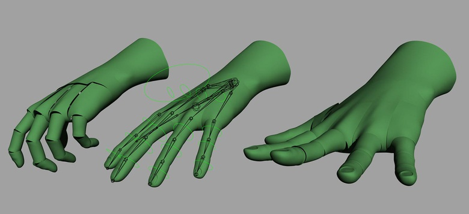Jahirul gives us 1-hour video breakdown of how to rig hands for animation in Maya with a written guide and tutorial assets.
Previous chapters
Maya rigging: Introduction to rigging
Maya rigging: Introduction to rigging a human torso
Maya rigging: Introduction to rigging the neck and the head
Maya rigging: Introduction to rigging the shoulder and the arms
In this tutorial, we continue to create the rig for our mesh by adding the joints and the controls for the hands. The hands are known to be the second most expressive part of the body (after the face), so we will want to make sure the rig is flexible enough for the animator to create a wide range of poses. One of the troubles we will need to overcome is to have the hand follow the FK and the IK arm chain as well as the transition between the two modes cleanly. We will also want the hand control to drive the forearm twist, so a bit of tinkering to our current rig will be in order. For the fingers, we will make sure to add the metacarpal bones as this allows for the hand to create a more believable fist. The fifth metacarpal (pinky) is particularly important because it is so flexible and works in conjunction with the thumb to allow for a great deal of dexterity.
Before we begin the hand itself, the first part of step 1 will recreate the shape of a couple of controls that have been annoying me visually. The controls I am going to re-work are the IK arm controls. There is nothing wrong with them on a rigging level; they do exactly what they should. I would just prefer that they looked less like the FK controls. If you are happy with the current shape of the controls for your rig, feel free to skip to step 2.
So, with fingers at the ready, let's rig…
Maya rigging - the hands
Annoying controls
To re-work the IK arm controls, first go Create > Polygon > Cube. Activate Snap to Points and then go Create > CV Curve Tool (Options). Set the Curve degree to 1 Linear and then click on the corners of the cube to create an outline of a box. Hit Enter when complete to create the cube-like curve and then delete the original polygon cube. Scale up the curve slightly so it is of a good size to fit around the hand, and then go Modify > Freeze Transforms to clean up the transformation channels.
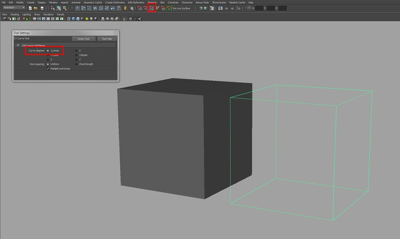Using the CV Curve Tool and point snapping to create a custom cube curve
To position the control, parent the new curve under l_arm_IK_ctrl and then zero out the translate values in the Channel Box. Once the control snaps into place, select it and hit Shift+P to un-parent it from the IK control. To create the control for the right arm, duplicate the curve, parent it under r_arm_IK_ctrl, zero out the translate values and then un-parent the curve. Select the original l_arm_IK_ctrl and add a few random letters on the end of its name. This is to stop the names clashing with our new control. Now select the first of our two new controls (left arm side) and rename that control l_arm_IK_ctrl. Do the same for the right arm.
Now parent l_arm_IK_ctrl under l_arm_IK_ctrl_auto and parent r_arm_IK_ctrl under r_arm_IK_auto. Now select the two previous IK controls and delete them. We now want to control the IK handles with the controls. In this order, select l_arm_IK_ctrl, Shift-select l_arm_IK and then go Constrain > Point. Do the same for the right-hand side. With l_arm_IK_ctrl and r_arm_IK_ctrl selected, go Modify > Add Attribute. Set the Data Type to Float and leave the Minimum, Maximum and Default boxes empty. With those settings, create the following two attributes: elbowTwist and armTwist. With the 2 controls still selected, highlight the rotate and scale attributes in the Channel Box, hold down the RMB and go Lock and Hide Selected.
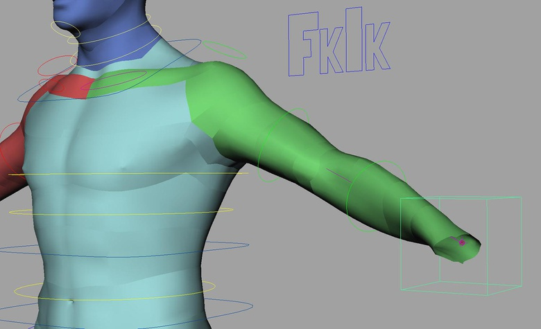The newly created IK arm control in place
To get the elbowTwist working, select l_arm_IK_ctrl and go Window > General Editors > Connection Editor. This should load the control into the left-hand side. Now select l_lowerArm_IK_jnt and hit Reload Right in the Connection Editor window. Now highlight elbowTwist on the left-hand side (should be down the bottom) and highlight rotate (open up rotate) on the right-hand side. Now for the armTwist. Select the l_arm_IK and hit Reload Right in the Connection Editor. Highlight armTwist on the left-hand side and select twist on the right-hand side. Once the left arm is done, repeat the step for the right arm.
A couple of things I want to quickly do before cracking on with the hands, is to first color the controls and, secondly to re-jig the hierarchy for the shoulder controls (this is covered in step 2). To do this, select the control you wish to color and Open up the Attribute Editor (Ctrl+A). Scroll down to Display and open up the Drawing Overrides tab. Turn on Enable Overrides and select an appropriate color from the Color slider.
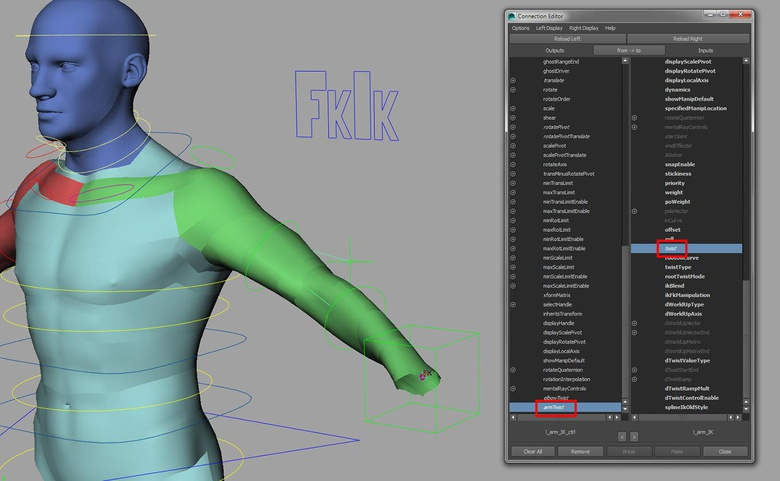Re-connecting the attributes of the IK arm control to the IK handle
Creating the palm joint
Currently, rotating the torso controls does not quite give me the result I'm after from the shoulders. To fix this, first select l_shoulder_ctrl_offset and r_shoulder_ctrl_offset and hit Shift+P to un-parent them from the chest_IK_ctrl. Now select spineF_IK_jnt, Shift-select l_shoulder_ctrl_offset and go Constrain > Parent. Repeat the step for the right arm and then we can move on to the hands.
Select l_armEnd_jnt and hit Ctrl+D to duplicate it and then Shift+P to bring it out of its current hierarchy. Rename the joint l_palm_jnt and then with that joint selected, hit Ctrl+D to duplicate it. Rename the new joint l_palmEnd_jnt and translate it along the Y-axis (make sure to set the translate mode to Local when doing this). Now parent l_palmEnd_jnt under l_palm_jnt.
Let's now create the low-res geometry for the hand. Select the main mesh and duplicate it. In Face mode, select all the faces, other than that of the hand, and delete them. Rename this geometry l_hand_proxy_geo and then parent the geometry under l_palm_jnt.
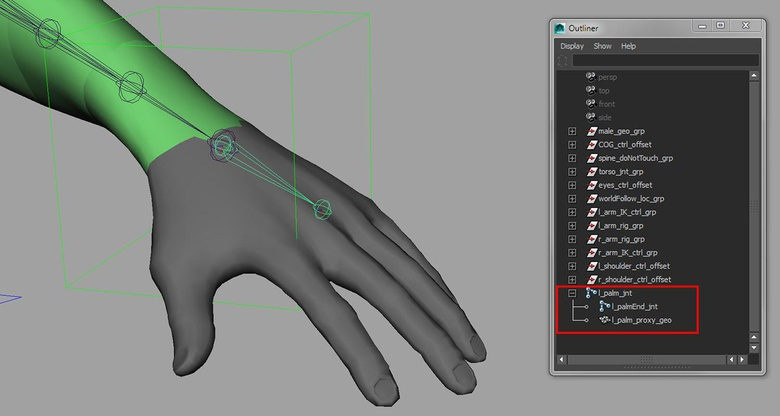The palm control in place and the low-res mesh parented to it
Creating the palm control
To create the palm control, open up the Script Editor, load the createControls.py and add the following line to the end of the script:
cmds.pointconstraint(ctrl, s, mo=0)
Select l_palm_jnt and then execute the script to create the control. The joint will be both point and orient constrained to the control. Now edit the control in CV mode (F8) to make it more easily selectable.
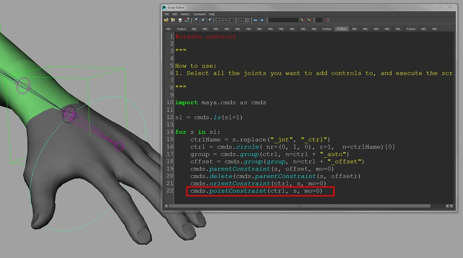Add the extra line to the script to both point and orient constraint the palm joint to the control
To get the palm to create the forearm twist, open up the Expression Editor (Windows > Animation Editor) and modify the bottom portion of the l_armTwist_expr to read like so:
l_lowerArmTwistA_jnt.rotateY = l_palm_jnt.rotateY *.25;
l_lowerArmTwistB_jnt.rotateY = l_palm_jnt.rotateY *.5;
l_lowerArmTwistC_jnt.rotateY = l_palm_jnt.rotateY *.75;
Now select l_palm_jnt, open up the Attribute Editor and set the Rotate Order to YZX. Set the Rotate Order for l_palm_ctrl to YZX also.
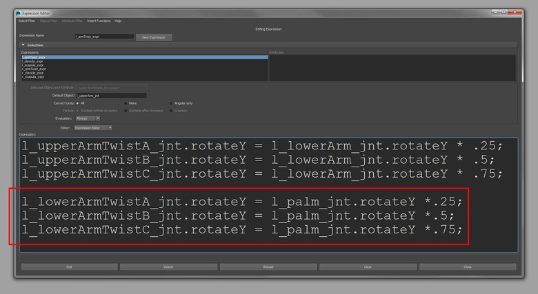Editing the l_armTwist_expr to have the palm joint drive the forearm twist
Attaching the hand to the arm
Create 2 locators (Create > Locator) and rename them l_arm_FK_con and l_arm_IK_con. Select l_arm_FK_con and hit Ctrl+G to group it to itself. Rename this group l_arm_FK_con_offset and then do the same for l_arm_IK_con. Now select both l_arm_FK_con_offset and l_arm_IK_con_offset and parent them under l_palm_ctrl. Zero out the translate and rotate attributes in the Channel Box so they snap into place and then hit Shift+P to un-parent them. To make the locators more easily selectable, select them and increase the Local Scale X, Y and Z in the Channel Box (you'll find this setting under SHAPES).

The locators in place to allow the hand to follow the arm, and editing the Local Scale to increase the locators' size
Open up the SDK window by going Animate > Set Driven Key > Set and with the fkIkSwitch_ctrl selected, hit Load Driver. Then select the parentConstraint node that lives under l_palm_ctrl_offset and hit Load Driven. Then set the L Arm attribute to 0 (FK mode) on the fkIkSwitch_ctrl and on the parentConstraint node, set the L Arm FK Con W0 to 1 and the L Arm IK Con W1 to 0. Hit Key on the SDK window. Now set the fkIkSwitch_ctrl to 1 (IK mode) and on the parentConstraint node, set the L Arm FK Con W0 to 0 and the L Arm IK Con W1 to 1. Hit Key on the SDK window once more. The palm should now follow the arm correctly in both FK and IK modes.
Let's do a quick tidy up of the Outliner now. First, let's rename l_arm_FK_con and l_arm_FK_con_offset to l_palm_FK_con and l_palm_FK_con_offset as that makes more sense (do the same for the IK set). Then, select both l_palm_FK_con_offset and l_palm_IK_con_offset and hit Ctrl+G. Rename this group l_palm_con_grp.
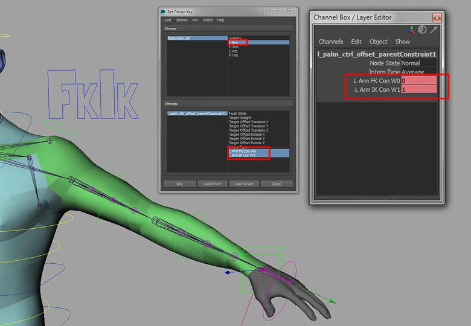Using the SDK window to have the hand follow the FK or the IK arm
Creating the finger joints
To create the finger joints, pop into the Top view and activate the Skeleton > Joint Tool. Starting with the index finger, draw a 5-joint chain going from the root of where the metacarpal bone would originate, then at each knuckle and finally at the tip of the finger. Don't worry too much about their position, as we will be correcting this next. If the joints are drawn extremely large, use the Radius in the Channel Box to make them smaller.
Now select the root joint for the chain and translate it up into the hand geometry. With the root joint still selected, go Skeleton > Orient Joint Tool (Options). Set the Primary Axis to Y, the Secondary Axis to X and the Secondary Axis World Orientation to X (+). Flexion should be created with positive X rotation. Now use a combination of the Joint orient in the Attribute Editor and the translate Y attribute (the length of the joint) to position the joints into place. Remember to check that all the rotation channels have zero values as do the translate X and Z channel for all the child joints. The root joint can have values in all the translate channels. Repeat this step for the remainder of the fingers and the thumb. Do note that the thumb is a 4-joint chain as it has one less bone than the fingers. Try and orient the joints so that when they are rotated using the rotate X attribute, they create a nice fist with the fingers coming together neatly. Analyze your own hand going from a default pose to a fist as you do this to inform how you orient the joints.
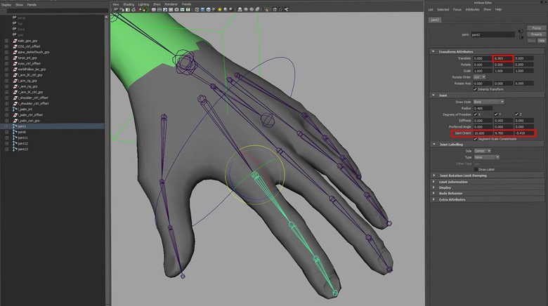Using the Joint Orient and the translate Y to orient and position the finger joints into place
Creating the low-res mesh
To chop up the geometry, select the relevant faces and then go Mesh > Extract in the Polygons menu. A useful way to select polygons is to grow and shrink the current selection using the < and > keys. Once you have chopped up the geometry, select all of it and go Edit > Delete By Type > History and also un-parent it from its current hierarchy.
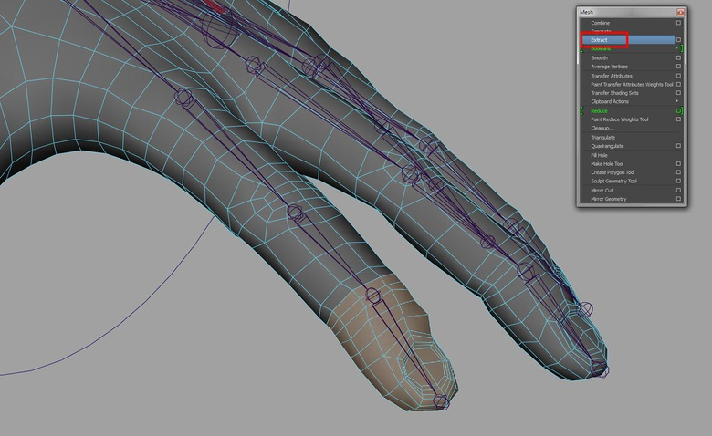Using the Mesh > Extract tool to create the low-res geometry
Renaming the mesh and the joints
Now comes the boring part. We need to go through and rename the joints and the geometry appropriately. A script would come in handy at times like this and there are plenty that you can grab from creativecrash that do just that. For now, I'm just going to do it manually. Here is a breakdown of the naming for the index finger joints and the mesh.
For the index finger joint chain from root to tip:
l_indexA_jnt, l_indexB_jnt, l_indexC_jnt, l_indexD_jnt and l_indexEnd_jnt
For the index finger geometry from root to tip:
l_indexA_proxy_geo, l_indexB_ proxy_geo, l_indexC_ proxy_geo, l_indexD_ proxy_geo, and l_indexEnd_ proxy_geo
Simply repeat this for the rest of the fingers replacing the index with the finger name: middle, ring, pinky and thumb. Once everything has been labeled, parent the relevant piece of geometry under the relevant joint.
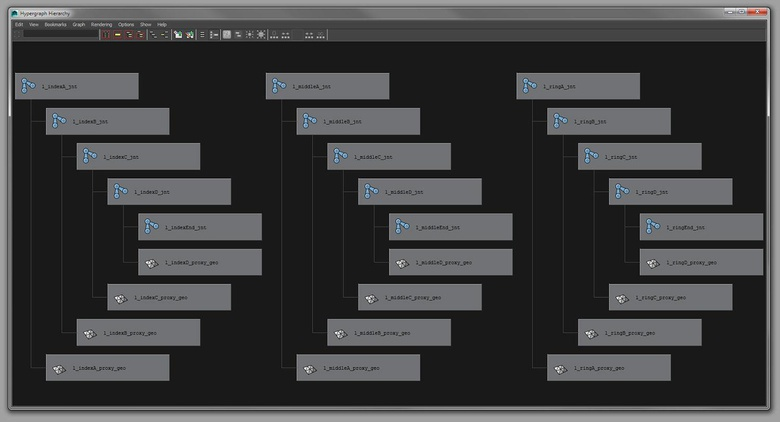Renaming the finger joints and the low-res geometry
Create the finger controls
We are going to use the createControls.py script to create the controls for the fingers, but first we need to delete the extra line we added to the script during step 3 as we are only interested in constraining the orientations. Once the line has been deleted, select all the finger joints (minus the end joints) and execute the script. If the controls are rather large when created, undo what you just did and reduce the radius on line 16 of the script (r=1.25). Re-execute the script and hopefully you will have something more manageable. Hit F8 to go into component mode and re-work the control shapes to make them more easily selectable.

Modifying the createControls.py script slightly to alter the size of the control curves
Now we need to create the parent child hierarchy with our controls to mimic the FK behavior of our joints. I'll describe the process for the index finger but you can simply repeat the process for the remainder of the fingers. So, first parent l_indexD_ctrl_offset under l_indexC_ctrl. Then parent l_indexC_ctrl_offset under l_indexB_ctrl. Parent l_indexB_ctrl_offset under l_indexA_ctrl_offset. Once all the finger control hierarchies have been set up, select all the l_"finger"A_ctrl_offset nodes and parent them all under l_palm_ctrl. The last thing to then do is parent all the finger joint chains under l_palm_jnt and everything should be pretty much good to go. The hierarchy for the index finger control
Cleaning up the hand rig
Start by color coding all the finger controls using the Drawing Override attributes. Then add a shader (green Lambert) to the left hand geometry so it is clear that it is the left-hand side. After this, select all the finger controls and the palm control and in the Channel Box, highlight all the translate and scale attributes. Hold down the RMB and go Lock and Hide selected.
In the Outliner now, select l_arm_IK_ctrk_grp, l_arm_rig_grp, l_shoulder_ctrl_offset, l_palm_jnt, l_palm_ctrl_offset and l_palm_con_grp and hit Ctrl+G. Rename the group l_arm_rig_grp and do the same for the right arm.
Repeat the steps for the right arm and you should have 2 working hands. We'll come back to the hands later on to allow for the animator to create the large movements for the fingers. Next time, we'll hit the legs.
Happy rigging.

The controls colored and the Outliner cleaned up
Maya rigging - the hands
Top tip: Get hands-on experience
I would always recommend analyzing the real thing before hitting the computer. However, the hand in particular demands some close attention, as it is such an important communicator of feelings and emotions. By looking beneath the skin, your knowledge of how the joints articulate will be far better informed, leading to more believable CG work.